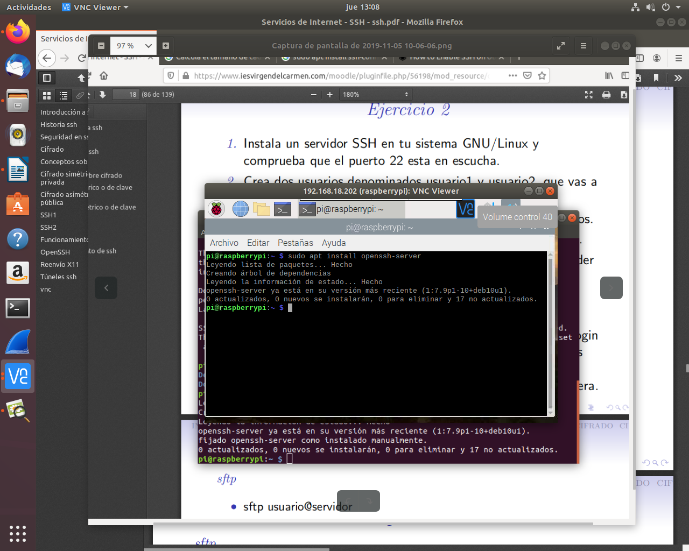
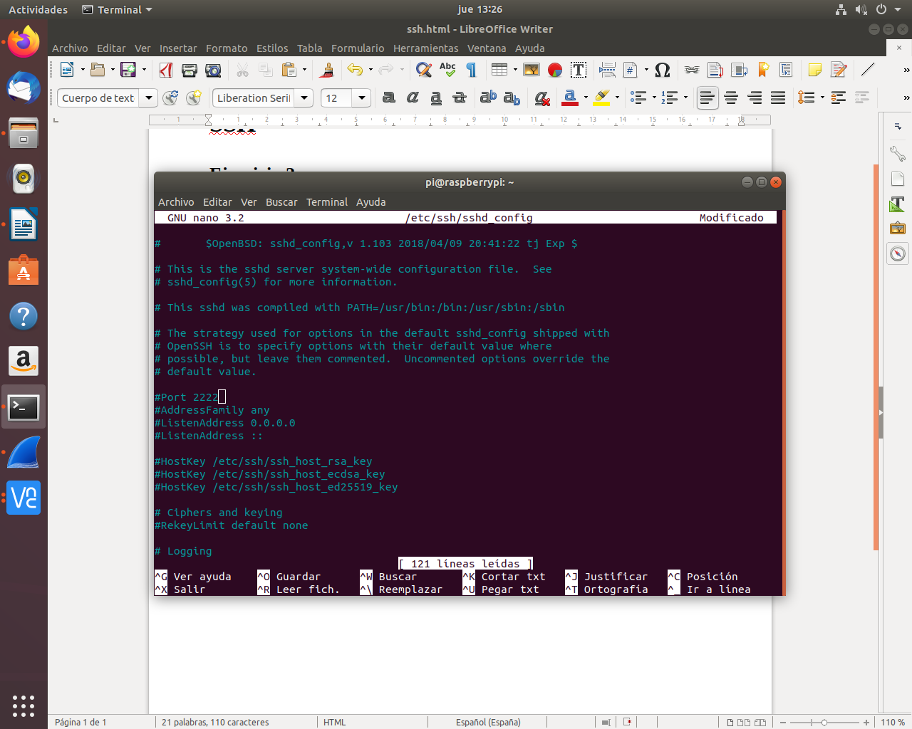
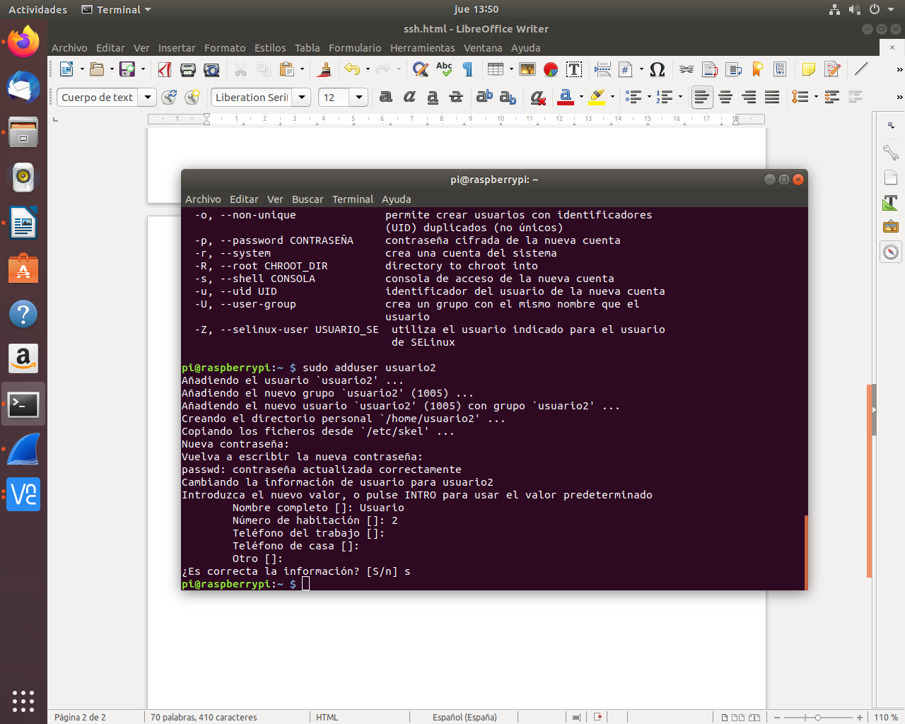
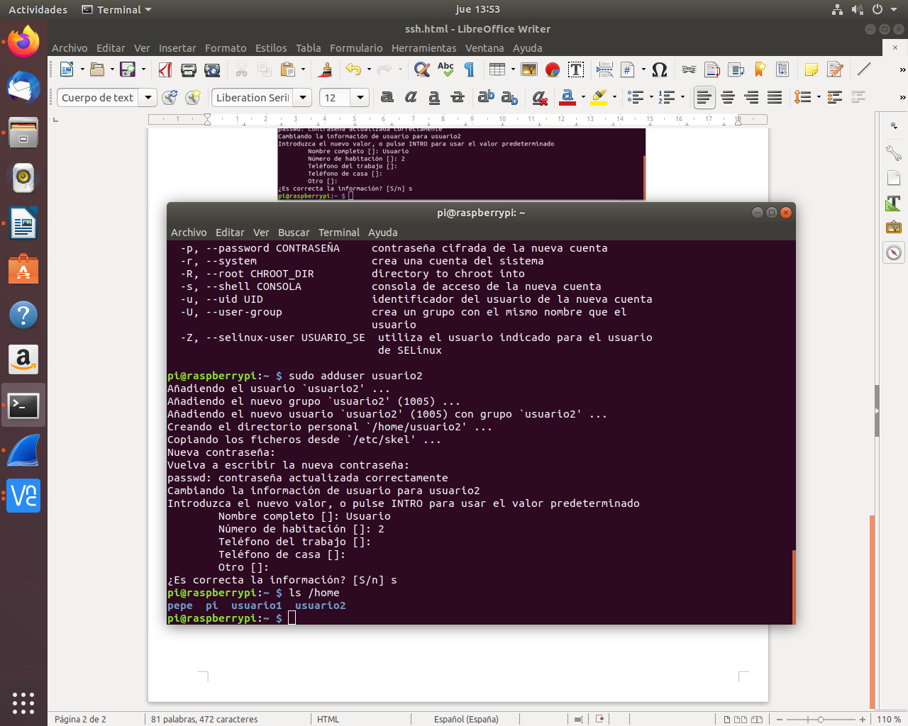
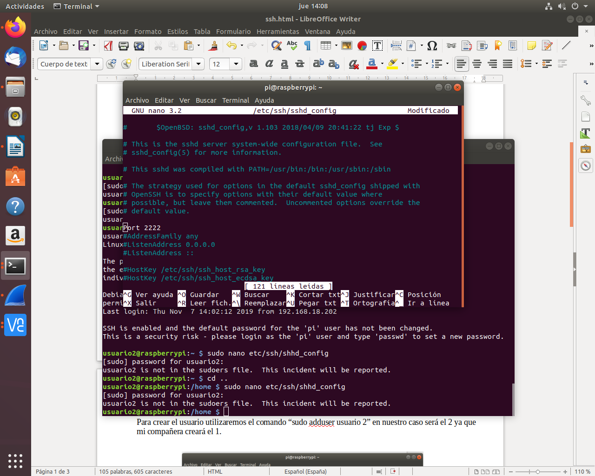
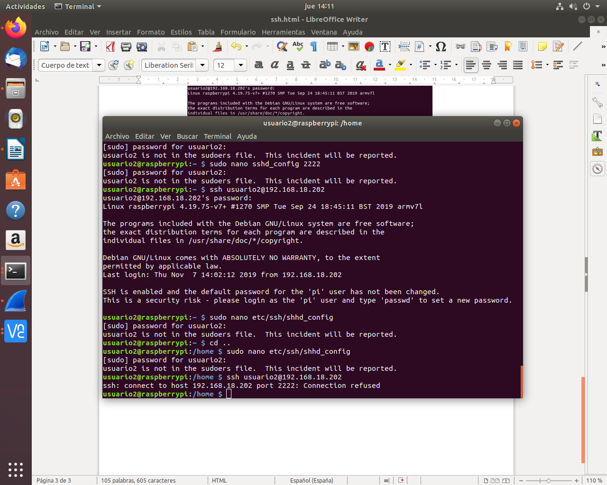
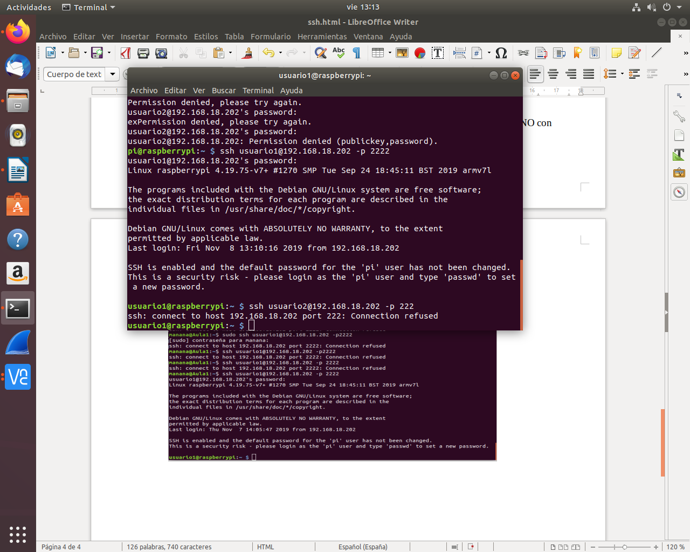
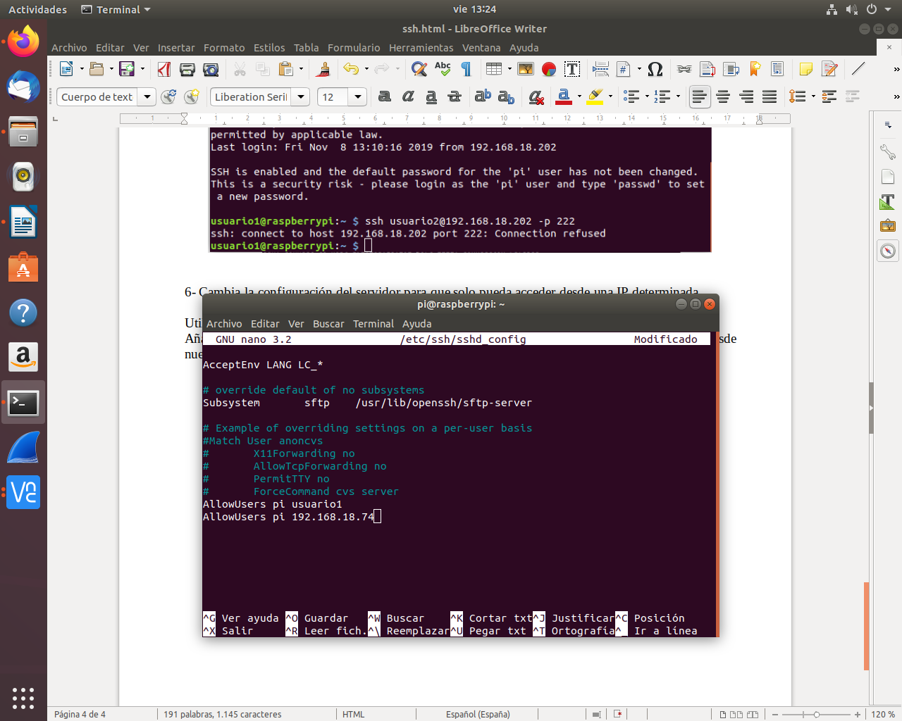
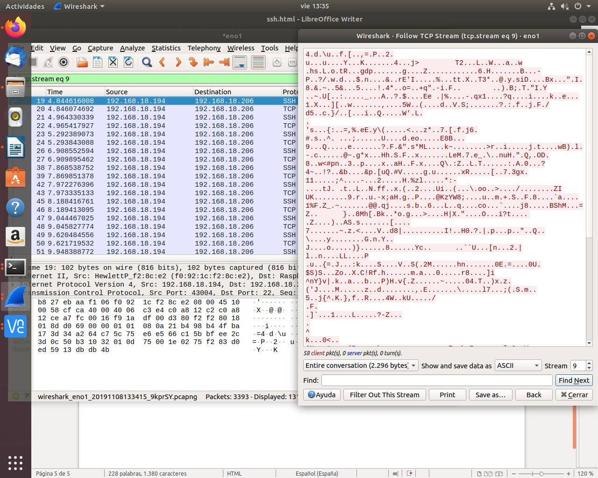
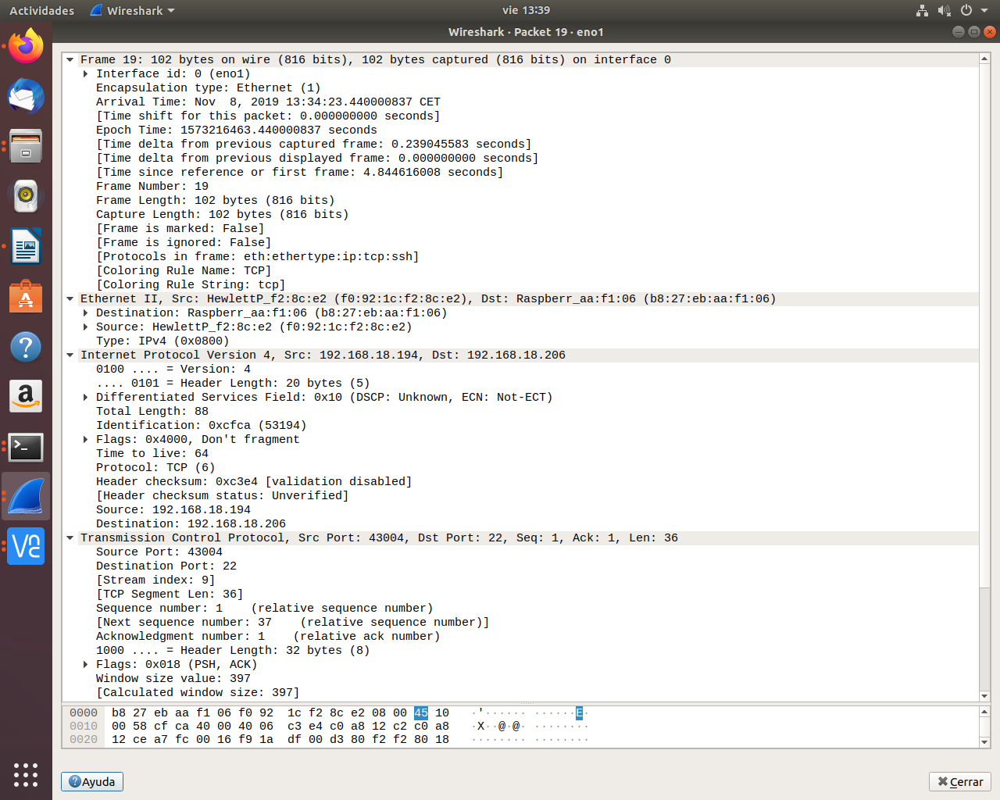

1- Instala un servidor SSH en tu sistema GNU/Linux y comprueba que el puerto 22 esta en escucha.

Para comprobar el puerto 22 realizaremos el comando “sudo nano etc/ssh/sshd_config”.

2- Crea dos usuarios denominados usuario1 y usuario2, que vas a usarlos en el ejercicio.
Para crear el usuario utilizaremos el comando “sudo adduser usuario 2” en nuestro caso será el 2 ya que mi compañera creará el 1.

Con el comando ls /home podremos ver los usuarios que tenemos creados.

3- Comprueba que puedes acceder mediante ssh a esos usuarios.
4- Cambia el puerto del servidor e intenta a acceder de nuevo.


5- Cambia la configuración del servidor para que puedas acceder al sistema con usuario1 y NO con usuario2.
Utilizamos el comando “sudo nano /etc/ssh/sshd_config”.
Añadimos al final de la página “AllowUsers pi usuario1” para que nos deje entrar con el usuario 1 y no con el 2.

6- Cambia la configuración del servidor para que solo pueda acceder desde una IP determinada.
Utilizamos el comando “sudo nano /etc/ssh/sshd_config”.
Añadimos al final de la página “AllowUsers pi 192.168.18.74” para que solo nos permita entrar desde nuestro equipo.


7- Captura con wireshark una conexión ssh, comprueba que login y contraseña van encriptada. Analiza cada una de las capas TCP/IP implicadas indicando los datos mas relevantes, además del tamaño de cada capa, separando datos y cabecera.
Abrimos el Wireshark, nos vamos a la terminal y lanzamos el comando “ssh pi@192.168.18.202 -p 2222” para acceder a la raspberrypi.
Una vez ya dentro volvemos al wireshark y buscamos “SSH”, nos aparecerá muchos trafico, escogemos una y comprobamos que está encriptada.

